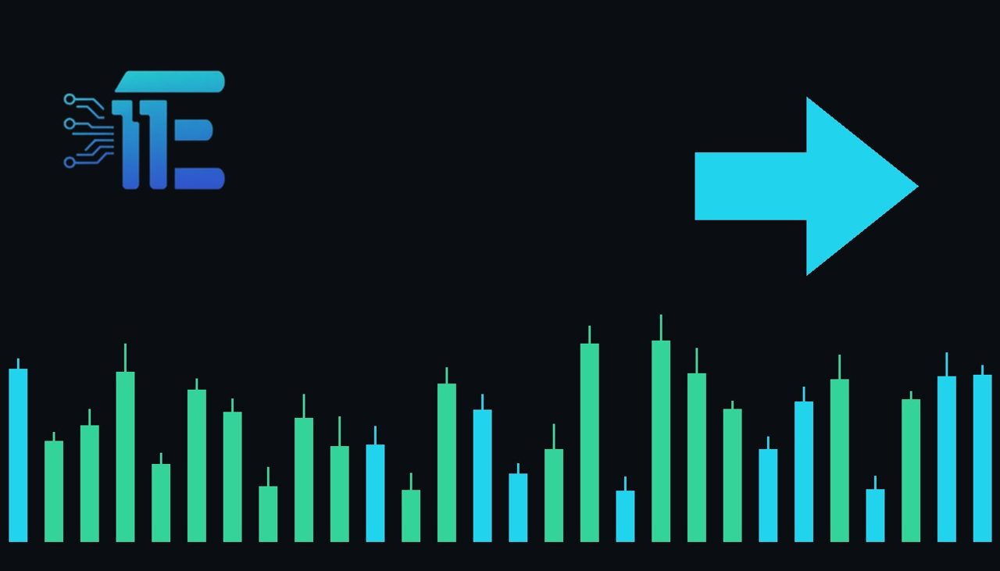

Spot Gold Slips as Dollar Firms While Futures Gainតម្លៃមាសស្ប៉តធ្លាក់ចុះបន្តិចខណៈប្រាក់ដុល្លារអាមេរិកងើបឡើង
XAU/USD impact: ◆ Mixedផលប៉ះពាល់លើ XAU/USD: ◆ ចម្រុះ

Spot gold dipped while futures climbed as the US dollar index rose. This currency movement directly influences gold pricing and broader market direction.
តម្លៃមាសស្ប៉តបានថយចុះខណៈពេលដែលតម្លៃហ្វុយឈឺរឡើងថ្លៃស្របពេលដែលសន្ទស្សន៍ដុល្លារអាមេរិកកើនឡើង។ ការប្រែប្រួលអត្រាប្តូរប្រាក់នេះជះឥទ្ធិពលដោយផ្ទាល់ទៅលើតម្លៃមាសនិងទិសដៅទីផ្សារទូទៅ។
Recent market data shows a split in precious metals performance as spot prices slipped while futures recorded gains. Specifically, spot gold moved down 0.1% to $3,583.58 an ounce, whereas U.S. gold futures advanced 1.3% to $3,581.10. At the same time, other precious metals saw upward movement, with spot silver gaining 1% to $41.8215 an ounce, platinum moving up 0.6% to $1,300.20, and palladium climbing 2.0% to $883.79 alongside a 2.4% rise in its futures to $868.25.
ទិន្នន័យទីផ្សារថ្មីៗនេះបានបង្ហាញពីភាពខុសគ្នានៃការអនុវត្តលោហៈមានតម្លៃ ដោយតម្លៃស្ប៉តបានថយចុះខណៈពេលដែលតម្លៃហ្វុយឈឺរបានកើនឡើង។ ជាពិសេស មាសស្ប៉តបានធ្លាក់ចុះ 0.1% មកត្រឹម 3,583.58 ដុល្លារក្នុងមួយអោន ខណៈពេលដែលហ្វុយឈឺរមាសអាមេរិកបានកើនឡើង 1.3% ដល់ 3,581.10 ដុល្លារ។ ទន្ទឹមនឹងនេះ លោហៈមានតម្លៃផ្សេងទៀតក៏បានកើនឡើងផងដែរ ដោយប្រាក់ស្ប៉តបានកើនឡើង 1% ដល់ 41.8215 ដុល្លារក្នុងមួយអោន ផ្លាទីនីមបានកើនឡើង 0.6% ដល់ 1,300.20 ដុល្លារ និង प्याលេដៀមបានកើនឡើង 2.0% ដល់ 883.79 ដុល្លារ។
This price action coincided with movement in the currency markets, where the U.S. dollar index climbed 0.1% to 103.77. The transmission channel to XAU/USD relies heavily on the strength of the U.S. dollar. A firmer dollar typically creates a headlining pressure on spot gold denominated in USD, as higher exchange values make bullion more expensive for holders of other currencies.
ចលនាតម្លៃនេះបានកើតឡើងស្របពេលជាមួយនឹងការប្រែប្រួលនៅលើទីផ្សារប្តូរប្រាក់ ដែលសន្ទស្សន៍ដុល្លារអាមេរិកបានកើនឡើង 0.1% ដល់ 103.77។ ការបញ្ជូនផលប៉ះពាល់ទៅកាន់ XAU/USD គឺពឹងផ្អែកខ្លាំងទៅលើកម្លាំងនៃប្រាក់ដុល្លារអាមេរិក។ ប្រាក់ដុល្លារដែលរឹងមាំជាទូទៅបង្កើតសម្ពាធលើតម្លៃមាសស្ប៉តដែលគិតជាប្រាក់ដុល្លារ ដោយសារតម្លៃប្តូរប្រាក់ខ្ពស់ធ្វើឱ្យមាសមានតម្លៃថ្លៃជាងមុនសម្រាប់អ្នកកាន់រូបិយប័ណ្ណផ្សេងទៀត។
A balanced view suggests that if the U.S. dollar index continues to strengthen alongside shifting rate expectations, spot gold may face sustained downside pressure. Conversely, any softening in the greenback or continued safe-haven demand could support further gains across both spot and futures contracts.
ទស្សនៈមានតុល្យភាពបង្ហាញថាប្រសិនបើសន្ទស្សន៍ដុល្លារអាមេរិកបន្តរឹងមាំស្របពេលនឹងការរំពឹងទុកអត្រាការប្រាក់ តម្លៃមាសស្ប៉តអាចនឹងប្រឈមមុខនឹងសម្ពាធចុះក្រោមបន្តទៀត។ ផ្ទុយទៅវិញ ការធ្លាក់ចុះនៃប្រាក់ដុល្លារ ឬតម្រូវការសុវត្ថិភាពបន្តអាចគាំទ្រដល់ការកើនឡើងបន្ថែមទៀត។
Traders should monitor upcoming currency fluctuations, broader macroeconomic data releases, and shifts in the U.S. dollar index to gauge the near-term trajectory for XAU/USD.
អ្នកជួញដូរគួរតែតាមដានការប្រែប្រួលរូបិយប័ណ្ណនាពេលខាងមុខ ទិន្នន័យម៉ាក្រូសេដ្ឋកិច្ច និងការផ្លាស់ប្តូរនៅក្នុងសន្ទស្សន៍ដុល្លារអាមេរិកដើម្បីវាស់វែងទិសដៅរយៈពេលខ្លីសម្រាប់ XAU/USD។
Key takeawaysចំណុចសំខាន់ៗ
- Spot gold slipped to $3,583.58 an ounce while U.S. gold futures rose.
- តម្លៃមាសស្ប៉តបានធ្លាក់ចុះមកត្រឹម 3,583.58 ដុល្លារក្នុងមួយអោន ខណៈពេលដែលហ្វុយឈឺរមាសបានកើនឡើង។
- The U.S. dollar index edged up to 103.77, creating a traditional currency headwind for spot bullion.
- សន្ទស្សន៍ដុល្លារអាមេរិកបានកើនឡើងដល់ 103.77 ដែលបង្កើតសម្ពាធប្រពៃណីលើមាសស្ប៉ត។
- Other precious metals, including silver, platinum, and palladium, posted notable gains.
- លោហៈមានតម្លៃផ្សេងទៀត រួមមានប្រាក់ ផ្លាទីនីម និង प्याលេដៀម បានបង្ហាញពីការកើនឡើងគួរឱ្យកត់សម្គាល់ផងដែរ។
Original commentary by THE MARKET CODE, based on public reporting from Yahoo! Finance: GC=F News. Written with the help of AI. Educational only, not financial advice.
មតិវិភាគដើមដោយ THE MARKET CODE ផ្អែកលើការរាយការណ៍សាធារណៈពី Yahoo! Finance: GC=F News។ សរសេរដោយមានជំនួយពី AI។ មាតិកាអប់រំប៉ុណ្ណោះ មិនមែនជាដំបូន្មានហិរញ្ញវត្ថុទេ។